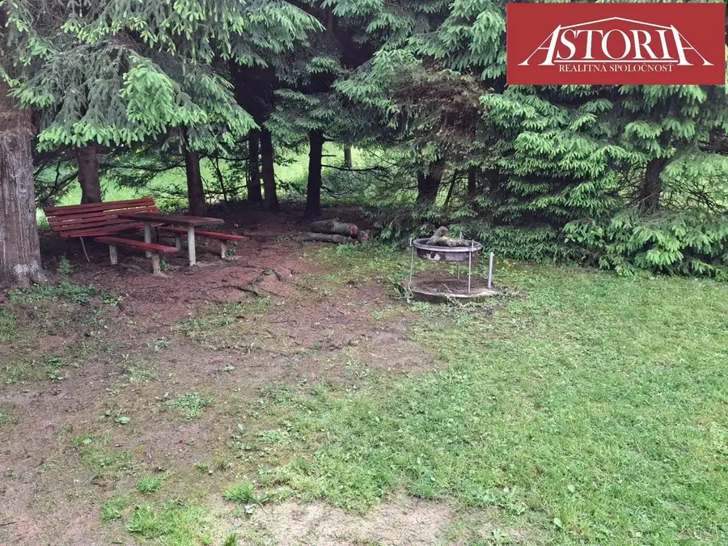
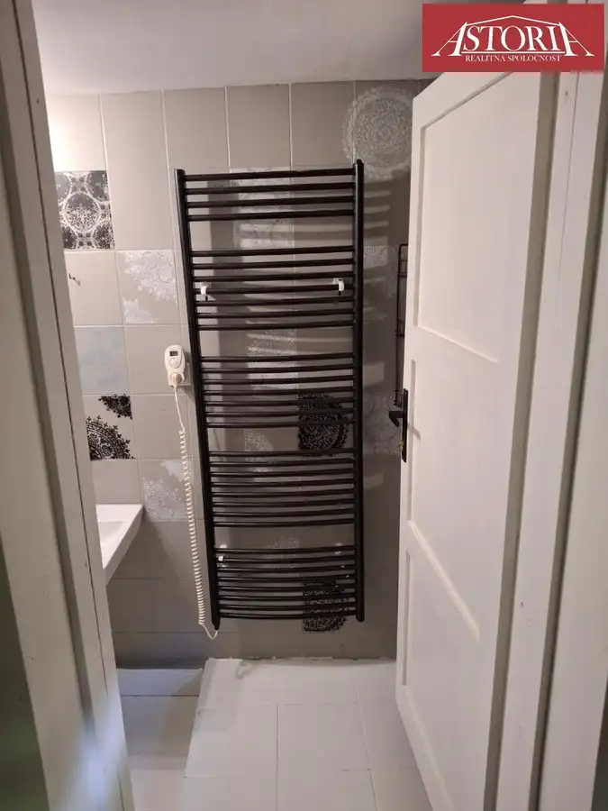
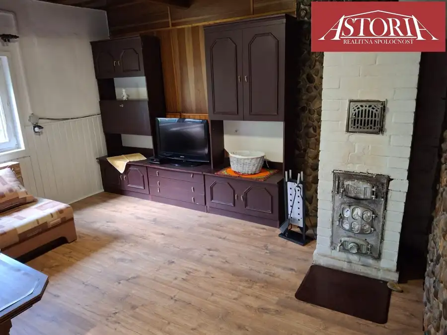
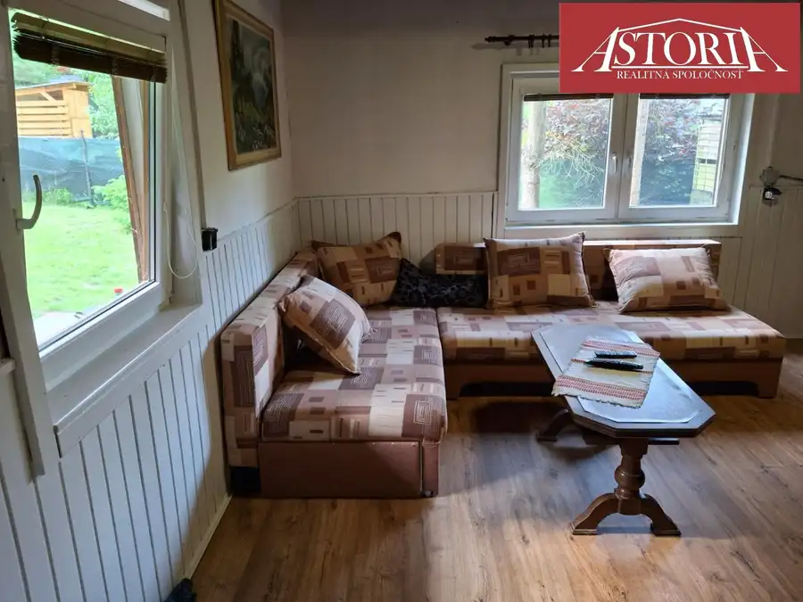
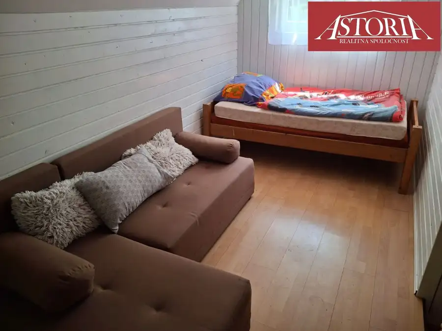
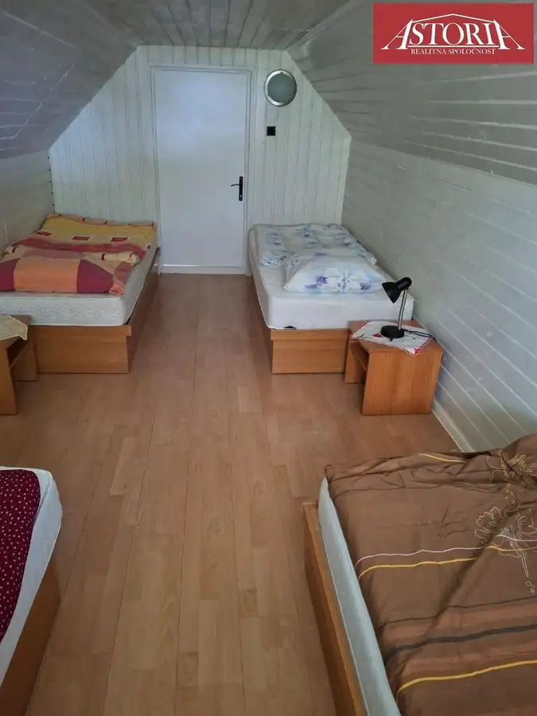
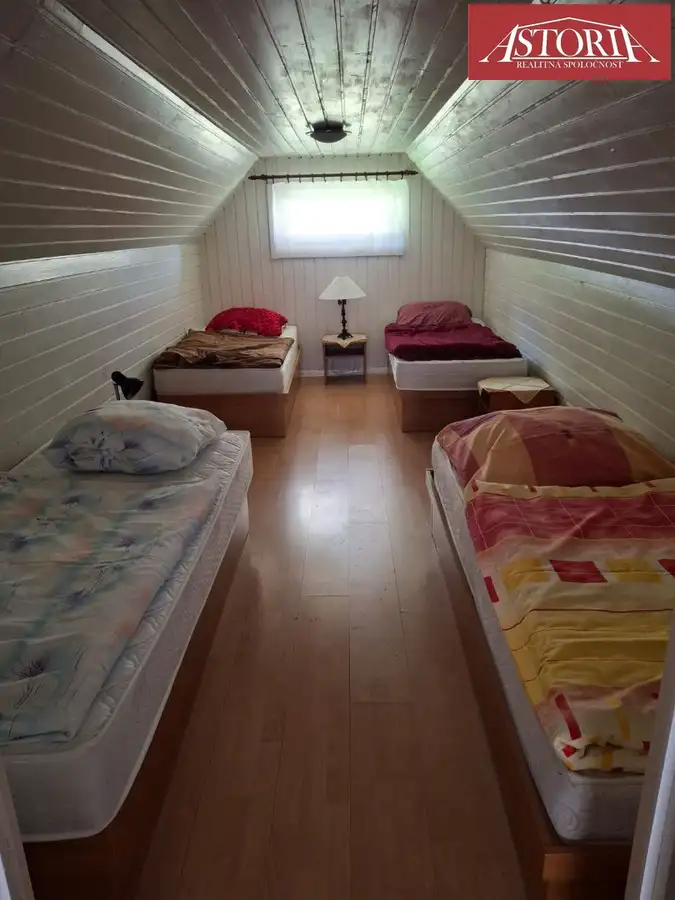

Rekreačná chata Vrútky, 3D prehliadka
Vrútky








- Plocha100 m²
- StavKompletná rekonštrukcia
- VlastníctvoOsobné
O nehnuteľnosti
Realitná kancelária ASTORIA Vám ponúka na predaj kompletne zariadenú drevenú chatu na vlastnom pozemku s výmerou 400 m² v obľúbenej rekreačnej lokalite Vrútky – Karvaša a Bláhovca. Táto nehnuteľnosť predstavuje ideálne miesto na oddych, víkendové pobyty, rodinnú rekreáciu alebo investíciu do prenájmu.Pre ešte lepšiu predstavu je súčasťou prezentácie aj 3D prehliadka, vďaka ktorej si môžete chatu pohodlne prezrieť z pohodlia domova.Čo Vás zaujme?vlastný pozemok o výmere 400 m²zastavaná plocha 61 m²úžitková plocha približne 100 m²chata po rekonštrukcii, predáva sa kompletne zariadenápokojné prostredie obklopené prírodouvýborná dostupnosť z mesta aj MHDDispozíciaPrízemieVstupná chodba vedie do útulnej kuchyne vybavenej novou kuchynskou linkou, chladničkou, prietokovým ohrievačom vody a jedálenským kútom. Dominantou chaty je príjemná obývacia izba s dreveným stropom, kachľami na pevné palivo a komfortným posedením, ktoré vytvára pravú atmosféru horskej chaty. K dispozícii je tiež televízia s Orange TV a internetové pripojenie. Na prízemí sa nachádza aj samostatná izba s dvoma lôžkami a moderne zrekonštruovaná kúpeľňa so sprchovým kútom, umývadlom, WC a novým elektrickým bojlerom na diaľkové ovládanie.PoschodieDrevené schodisko vedie do dvoch izieb, ktoré ponúkajú dostatok priestoru pre rodinu aj hostí. Jedna z izieb je priechodná.Technické informáciezrubová drevostavba po rekonštrukciiplastové oknánový náter dreveného obkladu a interiérové maľbyrekonštruovaná strecha s hliníkovou krytinouelektrické rozvody 230/400 Vvoda z obecného vodovodu s vlastným spoločným rezervoárom (bez poplatkov za vodné a stočné)žumpakombinované vykurovanie – pec na pevné palivo a elektrické konvektoryLokalita, ktorú si zamilujeteAk hľadáte pokoj, čistý vzduch a nekonečné možnosti aktívneho oddychu, táto nehnuteľnosť Vás nadchne. Chata sa nachádza v blízkosti národných parkov Malá a Veľká Fatra, ktoré ponúkajú množstvo turistických a cyklistických trás.V zimných mesiacoch oceníte dostupnosť viacerých lyžiarskych stredísk:Martinské hole – 10 kmJasenská dolina – 20 kmSnowland Valča – 25 kmKubínska hoľa – 55 kmPokojné prírodné prostredie poskytuje dokonalý únik od každodenného zhonu, pričom zastávka MHD je vzdialená len približne 5 až 10 minút chôdze.Cena 112 990,- EURCena zahŕňa kompletný právny servis, vypracovanie zmluvnej dokumentácie, návrh na vklad do katastra, poradenstvo a garanciu bezpečného prevodu nehnuteľnosti aj kúpnej ceny.Viac informácií Vám rada poskytne:Ing. Mária Halászovátel.: 0915 867 991e-mail: halaszova@astoria.sk
Parametre
- Druh
- Chata, drevenica, zrub
- Dátum zverejnenia
- 08. 10. 2026
- Energetický certifikát budovy
- nie je
- Orientácia
- Východná, Južná, Západná
- Plocha pozemku
- 400 m²
- Počet nadzemných podlaží
- 2
- Rok výstavby
- 1975
- Stav nehnuteľnosti
- Kompletná rekonštrukcia
- Telekomunikácie
- Internet
- Terén pozemku
- Rovinatý
- Typ
- Predaj
- Typ konštrukcie
- Zmiešaná
- Vlastníctvo
- Osobné
- Vybavenie
- Krb
- Vykurovanie
- Krb, Žiariče
- Zastavaná plocha
- 61 m²
- Úžitková plocha
- 100 m²